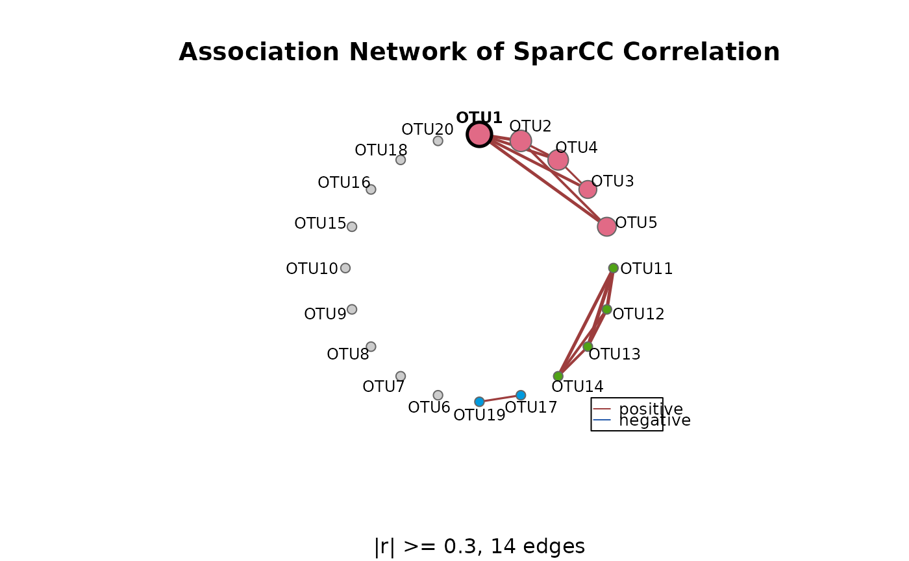

Makes a network of the features from their associations, such as
sparcc() correlations: an edge joins two features whose association is
strong (and significant) enough. Then measures each feature's centrality,
finds the hubs and clusters, and summarises the whole network, as
NetCoMi's netConstruct() and netAnalyze() do.
Usage
assoc_network(
x,
threshold = NULL,
alpha = NULL,
p_adjust = "BH",
sign = "signed",
clusters = "greedy",
hubs = "eigenvector",
hub_quantile = 0.95,
weighted_degree = FALSE,
cpus = n_cpus()
)Arguments
- x
Associations between features: a result of
sparcc()orrho_p()(or offeature_assoc()with a similarity), or a symmetric matrix of correlations with 1 on the diagonal, such as fromstats::cor().- threshold
An edge needs an association of at least this in absolute value (\(|r| \ge\)
threshold).NULL(the default) is the result's own cutoff when its method chooses one (for a method whose result is a selected graph, its non-zero entries; for one that returns athresholdattribute, that), and otherwise0.3, NetCoMi's default and the SparCC paper's cutoff.0makes every pair with a non-zero association an edge (withalpha, every significant pair).- alpha
Also make edges only of pairs whose adjusted p-value is at most this.
NULL(the default) for no p-value filter. Needs p-values: asparcc()result made withpermutations.- p_adjust
How to adjust the p-values for testing every pair: one of stats::p.adjust.methods. Default
'BH'. The adjustment is over all the pairs ofx. Used only withalpha.- sign
How an edge's association \(r\) becomes its length (a dissimilarity \(d\)) and weight (a similarity \(s = 1 - d\)):
'signed'(the default): \(d = \sqrt{(1 - r)/2}\), so that negative associations make long, weak edges;'unsigned': \(d = \sqrt{1 - r^2}\), so that strong negative associations make short, strong edges;'positive': as'signed', with the negative edges left out.- clusters
How to find clusters:
'greedy'(the default), fast greedy modularity optimisation (Clauset et al. 2004) on the edge weights \(s\), or'none'.- hubs
Which centralities make a hub: one or more of
'degree','betweenness','closeness'and'eigenvector'. A hub is above thehub_quantilequantile of every one named. Default'eigenvector'.- hub_quantile
The quantile a hub must be above. Default
0.95.- weighted_degree
If
TRUE, a node's degree is the sum of its edges' weights \(s\) rather than their number. DefaultFALSE.- cpus
How many threads to use for shortest paths (betweenness and closeness). Results are the same for any number.
Value
A list of class ecodive_network:
edges: a data frame, one row per edge, withfromandto(the two features,fromfirst in the input table),association(\(r\)),similarity(\(s\), the edge's weight),distance(\(d\), its length),sign(1or-1), andp_valueandp_adjustedwhenxhas p-values. Ordered byfrom, thento.nodes: a data frame, one row per feature (in the input table's order), withfeature,degree,betweenness,closeness,eigenvector(computed on the largest connected component: 0 for nodes outside it),cluster(an integer,0for a feature alone in its cluster, as every feature without edges is),hub(logical) andin_lcc(logical: whether it is in the largest connected component).global: a named numeric vector of the whole network's properties:n_nodes,n_edges,density,positive_fraction,n_components,lcc_size,average_dissimilarity,average_path_length,clustering_coefficientandmodularity(see Details).
Attributes: method (the method that made x, such as "sparcc";
absent for a matrix), n_samples (when x has it), threshold (the
cutoff used), alpha and p_adjust (when used), sign, hubs and
hub_quantile (which define the hub column), and
display (the title; see ecodive_display).
as.data.frame() gives the nodes table; plot() draws the network
(plot.ecodive_network()).
Details
Edges. Features \(i\) and \(j\) are joined when \(|r_{ij}|
\ge\) threshold and, with alpha, their adjusted p-value is at most
alpha, as assoc_pairs() lists them. Associations slightly beyond
\(\pm 1\) (possible for sparcc()) are taken as \(\pm 1\). As in
NetCoMi, whose network is a matrix of weights and whose graph of lengths
is a matrix of dissimilarities, a pair with weight \(s = 0\) (\(r =
-1\) with 'signed') is no edge, and an edge of length \(d = 0\)
(\(r = 1\), or \(|r| = 1\) with 'unsigned') isn't used by shortest
paths.
Average dissimilarity of a set of nodes: the mean of \(d\) over all
its pairs, counting 1 for the pairs that aren't edges (NetCoMi's
avDiss).
Centralities (NetCoMi's definitions, with centrLCC = TRUE): computed
on the largest connected component (LCC), of \(k\) nodes (a tie for the
largest goes to the component with the first feature), and 0 for the
other nodes. \(N\) is the number of features.
Degree: the number of a node's neighbours over \(N - 1\); with
weighted_degree, the sum of its edges' weights \(s\), not normalised.Betweenness: the number of shortest paths (on edge lengths \(d\)) between pairs of other nodes that pass through the node, each pair's count divided by its number of shortest paths (Brandes 2001), over \((k - 1)(k - 2)/2\). Two paths are equally short when their lengths agree to a relative \(10^{-12}\).
Closeness: \(\sum_u 1 / \delta(v, u)\) over the other nodes of the LCC, over \(k - 1\), where \(\delta\) is the shortest-path length divided by the LCC's average dissimilarity (NetCoMi's
sPathNorm = TRUE).Eigenvector: the leading eigenvector of the LCC's matrix of edge weights \(s\), scaled to a largest value of 1.
Hubs are the nodes above the empirical hub_quantile quantile
(stats::quantile()'s default type 7) of each centrality in hubs, over
all \(N\) features (those outside the LCC count, with 0). Values equal
to the quantile but for rounding (a relative \(10^{-12}\)) are not
above it.
Clusters. Fast greedy modularity optimisation (Clauset et al. 2004),
on the weights \(s\): every feature starts in a cluster of its own;
then, one pair at a time, the two connected clusters whose merge most
increases the weighted modularity are merged (ties to the pair with the
first features), until no two clusters are connected; the partition with
the largest modularity is kept, except that a single cluster of every
feature is never kept (as igraph's cluster_fast_greedy(); the
partition one merge before it is). Clusters are numbered in the order of
their first features; a feature alone in its cluster, as every feature
without edges is, is in cluster 0, as in NetCoMi.
Global properties (of the whole network):
n_nodes,n_edges: the numbers of features and of edges.density:n_edgesover the number of pairs.positive_fraction: the share of the associations that passed the filters that are positive. With'positive', the negative ones count though they make no edges (as NetCoMi's positive edge percentage with"signedPos").NAwithout edges.n_components: connected components, counting single features.lcc_size: nodes in the LCC.average_dissimilarity: the average dissimilarity of all features (see above).average_path_length: the mean shortest-path length over the pairs of connected features, divided byaverage_dissimilarity(NetCoMi'ssPathNorm = TRUE); 1 without edges.clustering_coefficient: the mean of Barrat et al.'s (2004) weighted local clustering coefficient over the nodes with at least two neighbours; 0 when there are none.modularity: Newman's (2006) modularity of the clusters, unweighted, with cluster 0 as one group (as NetCoMi reports it); 0 withclusters = 'none'or without edges.
Size. Shortest paths from every node take time
\(O(N(E + N \log N))\) for \(E\) edges, split over cpus threads;
memory is \(O(N + E)\) per thread. 3,000 features with 168,000 edges
take about 4 seconds on 4 threads.
Names in NetCoMi. threshold is thresh (with sparsMethod = "threshold"), alpha and p_adjust are alpha and adjust (with
sparsMethod = "t-test" or a permutation test), sign is dissFunc
("signed", "unsigned", "signedPos"), clusters = 'greedy' is
clustMethod = "cluster_fast_greedy", hubs and hub_quantile are
hubPar and hubQuant, and weighted_degree is weightDeg. NetCoMi
calls the global properties nComp, avDiss, avPath, clustCoef,
modularity, density and pep (a percentage).
Differences from NetCoMi (1.2.0, whose outputs were compared on 160 networks to a relative \(10^{-13}\)):
p-values are adjusted with
stats::p.adjust()only (NetCoMi's default is the local false discovery rate).Hubs use the empirical quantile; NetCoMi's log-normal fit (
lnormFit = TRUE) isn't offered.NetCoMi switches to the weighted degree when every pair is an edge;
weighted_degreeis never changed here.A network without edges is an error in NetCoMi; here every centrality is 0.
Two values that tie but for rounding are never one above the other (e.g. two eigenvector centralities of 1); NetCoMi's hubs can depend on that rounding.
Only the global properties above, of the whole network: not natural connectivity, vertex or edge connectivity, graphlet measures, or the LCC's own properties.
plot()draws a circular layout, with colour-blind-safer edge colours.
References
Peschel, S., Müller, C. L., von Mutius, E., Boulesteix, A.-L., & Depner, M. (2021). NetCoMi: network construction and comparison for microbiome data in R. Briefings in Bioinformatics, 22, bbaa290.
Brandes, U. (2001). A faster algorithm for betweenness centrality. Journal of Mathematical Sociology, 25, 163–177.
Clauset, A., Newman, M. E. J., & Moore, C. (2004). Finding community structure in very large networks. Physical Review E, 70, 066111.
Barrat, A., Barthélemy, M., Pastor-Satorras, R., & Vespignani, A. (2004). The architecture of complex weighted networks. PNAS, 101, 3747–3752.
Newman, M. E. J. (2006). Modularity and community structure in networks. PNAS, 103, 8577–8582.
Examples
# 60 samples of 20 taxa, with two groups of correlated taxa
set.seed(1)
basis <- matrix(rnorm(60 * 20), 60, 20)
basis[, 2:5] <- basis[, 2:5] + basis[, 1]
basis[, 12:14] <- basis[, 12:14] + basis[, 11]
counts <- matrix(
rpois(1200, exp(basis + 4)), 60, 20,
dimnames = list(NULL, paste0('OTU', 1:20)) )
net <- assoc_network(sparcc(counts, n_draws = 20))
net
#> Association Network of SparCC Correlation
#> 20 features, 14 edges (100% positive) with |r| >= 0.3
#> 12 components; the largest has 5 features
#> 3 clusters, modularity 0.561
#> Hubs (eigenvector): OTU1
net$global
#> n_nodes n_edges density
#> 20.00000000 14.00000000 0.07368421
#> positive_fraction n_components lcc_size
#> 1.00000000 12.00000000 5.00000000
#> average_dissimilarity average_path_length clustering_coefficient
#> 0.96079166 0.56438207 0.87550686
#> modularity
#> 0.56122449
plot(net)
